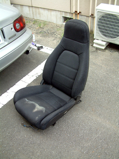
天井の穴から入った雨にやられてシートが痛んでしまいました。
特にドライバ側のシートの痛みがひどいので、新しいシートに交換するまで、とりあえず
助手席のシートに取り替えることにしました。
しかし、結論からいうとドライバ側と助手席側のシートは同じ形状でないため、２本あるシートレールのうち、片方しか固定できませんでした。ひどくぐらつくわけではないですが、危険です。
シートを固定しているレールは２本で、それぞれ前後にボルトで固定されているため、計４本のボルトをはずします。前後のボルトは、シートを一番前と一番後ろにそれぞれスライドさせてはずします。ポイントは「ボルトがめちゃめちゃ硬い」ので地道にはずすことです。
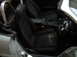 |
痛んでしまったシート |
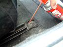 |
シートを固定しているボルトは４箇所ありますが、まずはCRC5-56をボルトの周囲から染み込ませて回りやすくします。初め何もしないでいきなりソケットレンチで回そうとしてみたのですが、めちゃめちゃ硬くてレンチかボルトの頭を壊すかと思いました・・結局前日の夜にCRC5-56をさしておきました。 |
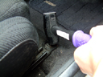 |
錆びて固着しているかもしれないので、念のためハンマーで垂直に２，３回叩いておきます。 |
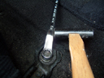 |
メガネレンチをはめて、横からトンカチで叩いて少し緩めます。ちなみにボルトのサイズは14mmでした。 |
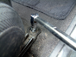 |
柄の長いソケットレンチではずします。ソケットサイズも9.5mm sq.では心細いので、 12.7mm sq.を使いました。 |
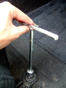 |
緩んだらTレンチなどではずします。 |
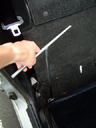 |
後ろ側は長めのTレンチかソケットレンチにエクステンションバーを取り付けて使います。 |
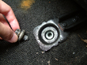 |
やっととれた！ |
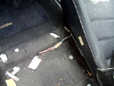 |
シートをはずすと、シートに内蔵されているスピーカのコードが でてきました。 |
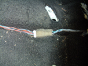 |
スピーカケーブルのコネクタをはずします。 |
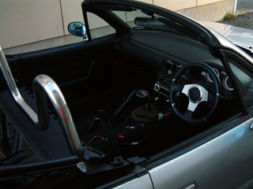 |
両側のシートをはずした状態 これでは乗れません。 |
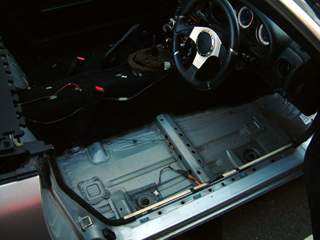 |
ドライバ側はシートのみならず、フロアも痛みが激しかったため内張りをはずしました。カーペットの裏にあるクッションに水が染み込んだままでした・・内張り（カーペット）は大きめのカッターナイフで簡単に切り取れます。 |
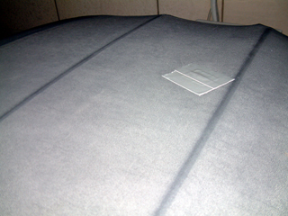 |
全てはこの穴のせい・・ こっちを先に直せという説も。 |


つづく・・？
ｂｙ すすたわり